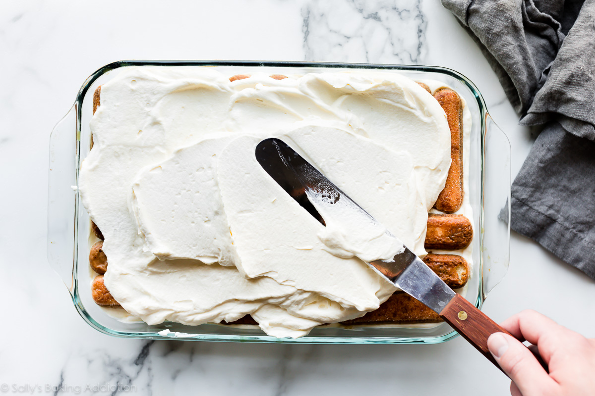
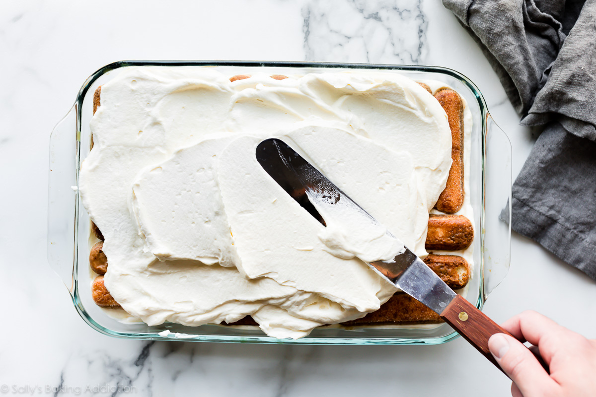

TIRAMISU 💗Posted on June 13, 2019 / posted in No-Bake Recipes |

 

|
üç∞üç∞
Tiramisu is a timeless no-bake Italian dessert combining espresso-dipped ladyfingers and a creamy lightly sweetened mascarpone cream. This recipe is from the late Maida Heatter and is easily the best homemade tiramisu recipe that I’ve ever tried.
A couple months ago, I was sent a new cookbook called Happiness is Baking. This cookbook includes Maida Heatter’s favorite recipes with the foreword written by Dorie Greenspan. I, unsurprisingly, immediately fell in love with my newest cookbook. It’s a collection of 100 foolproof and classic desserts including cookies, cakes, muffins, pies, tarts, and more that range from simple everyday cookies to outrageously indulgent chocolate soufflé cake.
INGREDIENTS
- 1 and 1/4 cups (300ml) very strongly prepared espresso, warm or room temperature
- 6 Tablespoons (90ml) Grand Marnier*
- 40–45 ladyfingers*
- 16 ounces (about 2 cups; 450g) mascarpone, cold or at room temperature
- 1/4 cup (60ml) dark rum
- 4 large pasteurized eggs, separated*
- 1/2 cup (100g) granulated sugar, divided*
- 2 cups (480ml) heavy cream or heavy whipping cream
- 1/2 teaspoon pure vanilla extract
- 1/8 teaspoon salt
- unsweetened natural or dutch-process cocoa powder
For those not familiar, Maida Heatter is an icon, especially in the baking world. Dubbed the Queen of Cake, her expansive culinary career included 9 cookbooks, recipes for the Times, a restaurant, and three James Beard Awards. Baker and author Dorie Greenspan once said “Whenever someone tells me they want to learn to bake, I tell them to start with Maida Heatter’s books. That’s what I did.” This latest cookbook is a testament to Maida’s legacy. She passed away only 2 months after this book was published. She leaves behind an incalculable amount of inspiration to bakers and cooks all over the world.

VARIATIONS
The original shape of the cake is round, although the shape of the biscuits also allows the use of a rectangular or square pan. However, it is often assembled in round glasses, which show the various layers, or pyramid. Modern versions can have the addition of whipped cream or whipped egg, or both, combined with mascarpone cream. This makes the dish lighter, thick and foamy. Among the most common alcoholic changes includes the addition of Marsala wine. The cake is usually eaten cold.
Another variation involves the preparation of the cream with eggs heated to sterilize it, but not so much that the eggs scramble. Over time, replacing some of the ingredients, mainly coffee, there arose numerous variants such as tiramisu with chocolate, amaretto, berry, lemon, strawberry, pineapple, yogurt, banana, raspberry, and coconut. These, however, are not considered true Tiramisu as these variations only share the layered characteristic of Tiramisu; these examples more closely resemble variations of trifle.
Numerous variations of Tiramisu exist. Some cooks use other cakes or sweet, yeasted breads, such as panettone, in place of ladyfingers (savoiardi). Bakers living in different Italian regions often debate the use and structural qualities of utilising other types of cookies, such as pavesini for instance, in the recipe. Other cheese mixtures are used as well, some containing raw eggs, and others containing no eggs at all. Marsala wine can be added to the recipe, but other liquors are frequently substituted for it in both the coffee and the cheese mixture, including dark rum, Madeira, port, brandy, Malibu, or Irish cream and especially coffee-flavoured liqueurs such as Tia Maria and Kahlúa. Amaretto liqueurs, such as Disaronno, are also often used to enhance the taste of tiramisu.
Tiramisu is similar to other desserts, in particular with the Charlotte, in some versions composed of a Bavarian cream surrounded by a crown of ladyfingers and covered by a sweet cream; the Turin cake (dolce Torino), consisting of ladyfingers soaked in rosolio and alchermes with a spread made of butter, egg yolks, sugar, milk, and dark chocolate; and the Bavarese Lombarda, which is a similar composition of ladyfingers and egg yolks (albeit cooked ones). In Bavarese, butter and rosolio (or alchermes) are also used, but not mascarpone cream or coffee.
COMMON TIRAMISU QUESTIONS - Answered
- What kind of rum do I use in tiramisu?
- Dark rum is best, but you can use brandy or your favorite coffee liqueur.
- Egg whites or whipped cream?
- Most tiramisu recipes use whipped egg whites OR whipped cream in the mascarpone cream layers. Egg whites contribute a more airy texture, while whipped cream makes the filling a bit more rich. This recipe actually uses both, so you’re getting both delightful textures
- Are the eggs cooked?
- Tiramisu is a no-bake dessert. The egg yolks are gently cooked on the stovetop, but the egg whites are raw. Purchase pasteurized eggs because they are safe to consume raw.
- What size pan to use?
- This particular tiramisu recipe yields a large volume and the pan will be very full. Make sure your pan is large enough. I recommend a 9×13 inch dish with at least a 12-14 cup capacity. This 4 quart dish is wonderful too.
TUTORIALS
Here you will find some video tutorials to help you to make a delicious Tiramisu dessert.